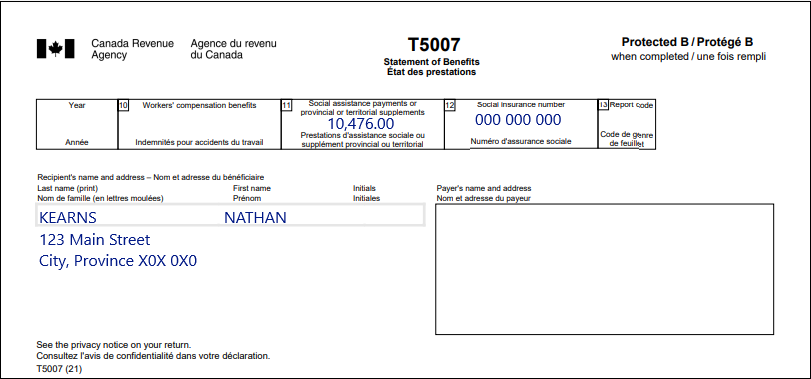
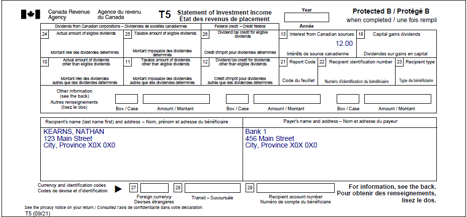

Reporting social assistance income
Pre-test question
Sorry, that's incorrect
Although these payments are not taxable, they must be reported on a tax return because they help determine an individual’s eligibility for certain benefits such as the Old Age Security (OAS) supplement, the goods and services tax/harmonized sales tax credit (GSTC/HST) and the Canada Child Benefit (CCB).
That's correct
Although these payments are not taxable, they must be reported on a tax return because they help determine an individual’s eligibility for certain benefits such as the Old Age Security (OAS) supplement, the goods and services tax/harmonized sales tax credit (GSTC/HST) and the Canada Child Benefit (CCB).
Instructions
- Open the tax software
- Review the Background information and Required slips (tax slips, receipts, etc.)
- Provide all required information for the appropriate sections of the tax software
- Once completed, compare your results with the solution provided
- Afterwards, refer to the Takeaway points
Background information
Situation
Nathan and Sophia are common-law partners who live together and received social assistance payments in 2022. Nathan also has an interest payment to report.
Identification information
| Name | Nathan Kearns |
|---|---|
| Social insurance number (SIN) | 000 000 000 |
| Address | 123 Main Street City, Province X0X 0X0 |
| Date of birth | September 21, 1989 |
| Marital status | Common-law with: |
Required slips
T5007 – Statement of Benefits (for Nathan)
Text version of the T5007 slip
T5007 – Statement of benefits
Protected B
Recipient’s name and address:
Last name: Kearns
First name: Nathan
123 Main Street
City, Province X0X 0X0
Box 11: Social assistance payments or provincial or territorial supplements: 10,476.00
Box 12: Social insurance number: 000 000 000
T5 – Statement of Investment Income (for Nathan)
Text version of the T5007 slip
T5 – Statement of Investment Income
Protected B
Recipient’s name and address:
Kearns, Nathan
123 Main Street
City, Province X0X 0X0
Payer’s name and address:
Bank 1
456 Main Street
City, Province X0X 0X0
Box 13: Interest from Canadian sources: 12.00
Review your results
Solutions will be available in February 2023 as printable PDF.
Takeaway points
Steps to follow
- Review the background information and required slips
- In Interview setup, tick the box next to Social assistance, worker’s compensation (T5007/RL-5) and tick the box next to Interest, investment income and carrying charges/interest expenses/CNIL (T3, T5, T4PS, T5008, RC359) in the Employment and other benefits section
- Click Social assistance, worker’s compensation in the left side menu, then click the + sign next to T5007 – Workers’ compensation benefits, social assistance, etc. (federal lines 14400, 14500, 14600) and complete the required fields
- Repeat the same steps with Sophia’s information, but select Spouse of family head from the Select the person whose name appears on the slip drop-down menu
- Click Interest, investment income and carrying charges from the left side menu, then click the + sign next to T5 – Investment income and enter the amounts from the T5 slip
For couples receiving social assistance payments, the individual with the higher net income must report all of the payments. The net income calculation does not include the social assistance payments (line 14500), child care expenses (line 21400) or social benefit payments (line 23500).
Since Nathan’s net income before the social assistance payments is $12 and Sophia’s is $0, the software automatically reports each individual’s social assistance payments on Nathan’s tax return. If both individuals have the same net income, the amounts are reported by the individual who is issued the tax slip.
For more information refer to UFile instructions.